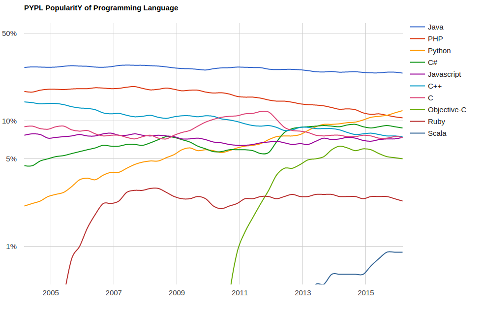

JavaScript in 2016
Current status of JS development
Javascript
This is Javascript. If you put big wheels and a racing stripe on a golf cart, it's still a fucking golf cart.
@source: if programming languages were vehicles
WAT
2 == [2];
// true
2 == [[2]];
// true
[] + [];
// ""
[] + {};
// "[object Object]"
{} + [];
// 0
WAT
"string" instanceof String;
// false
String("abc") instanceof String;
// false
new String("abc") instanceof String;
// true
111111111111111111111 === 111111111111111110000;
// truePopularity
Popularity
languages usage
 @source: github
@source: githubPopularity
libraries count
 @source: modulecounts.com
@source: modulecounts.comPopularity
google trends - tutorials search
@source: pypl.github.ioUbiquity
Ubiquity
Browser & server
- Node.js
- Angular
- React
- Ember
- Backbone
- Meteor
- Polymer
- Aurelia
- ...
Ubiquity
Cross platform desktop apps
Ubiquity
Mobile native apps
Ubiquity
Microcontrollers
Ubiquity
Drones & IoT
Ubiquity
Shell
Ubiquity
Virtualisation

ECMAScript
| Version | Date published |
| 1.0 | 1997 |
| 2.0 | 1998 |
| 3.0 | 1999 |
| 4.0 | abandoned |
| 5.0 | 2009 |
| 5.1 | 2011 |
| 6.0 | 2015 |
| 7.0 | in progress |
ES6 - Classes
class Polygon {
constructor(height, width) {
this.height = height;
this.width = width;
}
}
let p = new P(100, 200);
ES6 - let, const, var
function() {
if(true) {
var v = 1;
let l = 1;
const c = 1;
}
console.log(v, l, c);
}
ES6 - spread & destructuring
let array = [1, 2, 3, 4, 5];
let [one, two, ...rest] = array; // one = 1, two = 2, rest = [3, 4, 5]
let array2 = [...array, 6, 7, 8] // [1, 2, 3, 4, 5, 6, 7, 8]
let {a, b} = {a:1, b:2} // a = 1, b = 2
let {a, b, ...rest} = {a:1, b:2, c:3, d:4} // ES7
let [a, b] = [b, a]; // swap
ES6 - spread & destructuring
let obj = {a:1, b:2};
let d = 4;
let obj2 = {
...obj,
c:3,
d
}
// obj2 = {"a":1, "b":2, "c":3, "d":4}
ES6 - destructuring
function f({a, b}) {
return a + b;
}
f({a: 1, b: 2})function plot({size = 10, cords = { x: 0, y: 0} } = {}) {
...
}
plot({ cords: { x: 18, y: 30 } });
ES6 - modules
export const PI = Math.PI;
export function sin(x) {}
export function cos(x) {}
export function random(x) {}
export default {
PI,
sin,
cos,
random
}
import { PI } from 'my/module';
import { sin, cos } from 'my/module';
import { random as mathRandom } from 'my/module';
import Math from 'my/module';
ES6 - string templates
let x = 2, y = 3;
let text = `value of x = ${x + y}`
`
multi
line
`ES6 - tagged template literals
function tag(strings, ...values) {
return function(obj) {
return strings[0] + obj[values[0]] + strings[1];
};
}
let hello = tag`Hello ${'name'}!`;
hello({name: 'Alice'}); // "Hello Alice!"
hello({name: 'Bob'}); // "Hello Bob!"
ES6 - generators
function* oneTwo(){
yield 1;
yield 2;
}
let gen = oneTwo();
console.log(gen.next()); // {value: 1, done: false}
console.log(gen.next()); // {value: 1, done: false}
console.log(gen.next()); // {value: undefined, done: true}
ES6 - rest arguments
function argsLength(...theArgs) {
console.log(theArgs.length);
}
argsLength(); // 0
argsLength(5); // 1
argsLength(5, 6, 7); // 3
ES6 - arrow functions
function (a) {
return a * 2;
}
a => a * 2
() => 4
(a, b) => a * b
(a, b) => {
return a * b;
}
return function() {
return this.text
}.bind(this);
return () => this.text
ES6 - promises
let promise = new Promise((resolve, reject) => {
let result = Math.random();
result < 0.5 ? resolve(result) : reject('too much');
});
promise
.then(result => console.log(result))
.catch(e => console.log(`error: ${e}`))
ES6 - more...
- Map, Set
- WeakMap, WeakSet
- Reflect
- Symbol
- Proxy
ES7- more, more, more...
Exponentiation operator
let cubed = x => x ** 3;
async/await
async function asyncFunction() {
await functionReturningPromise();
}
asyncFunction().then(...)
decorators
class Person {
@memoized
get name() { return 'Bob'; }
}
class properties
class Person {
name = 'Alice';
static says = 'I love JS!';
}
Tooling
NPM

package manager for JavaScript
Gulp/Grunt


JavaScript build system and task runner
Webpack

module bundler for JavaScript
Firebug / Chrome Dev Tools


JavaScript debugging tools
Babel

pluggable JavaScript compiler
Evolution
Transpilers
source-to-source compilers
- CoffeeScript - syntactic sugar inspired by Ruby, Python and Haskell
- TypeScript - superset of JavaScript with optional static typing
- Dart - general-purpose programming language developed by Google
- JSX - superset with XML-like syntax for HTML elements representation
Other (366): ruby (9), python (16), java (16), scala (4), .NET (19), lisp-like (23)
@more: Languages compiled to JavaScriptTypescript
interface Shape {
new (color: string);
}
class Square implements Shape {
private size: number;
constructor(size: number, color: string) {
super(color);
this.size = size;
}
}
var square: Square = new Square(10, 'blue');
Typescript
declare namespace d3 {
export var version: string;
export function select(selector: string): Selection;
export function selectAll(nodes: EventTarget[]): Selection;
}
declare module 'd3' {
export = d3;
}